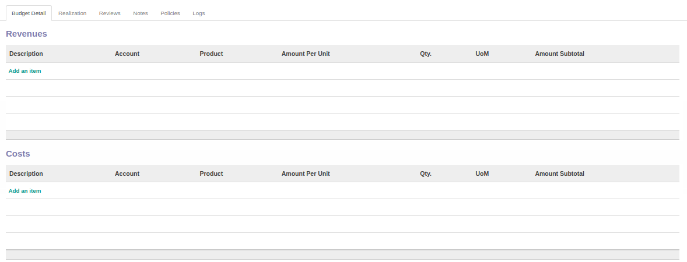
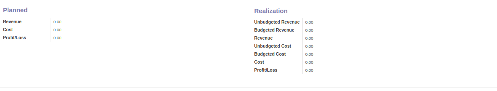
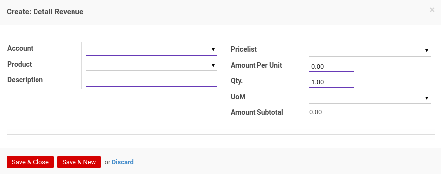
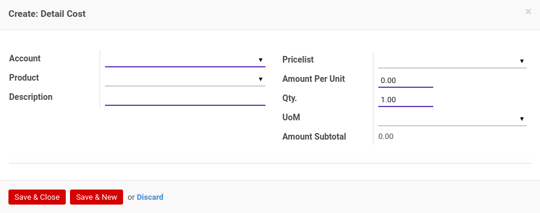
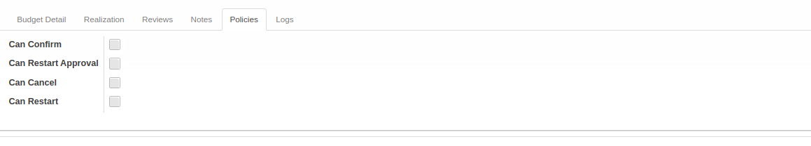
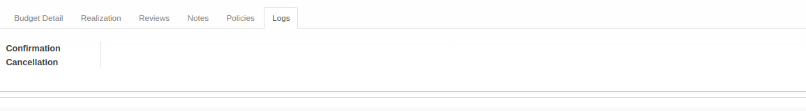

Penjelasan Analytic Budget
Informasi pada Analytic Budget dibagi menjadi beberapa bagian, yaitu:
HEADER

# Analytic Budget
Nomor analytic budget.
Company
Nama perusahaan.
Type
Tipe analytic budget.
Responsible
Nama penanggung jawab analytic budget.
Analytic Account
Akun analitik.
TAB BUDGET DETAIL
 
TABEL Revenues
Daftar detail revenue yang termasuk dalam budget.
Pop Up Revenue saat add an item diklik.

Account
Nama akun.
Product
Nama produk.
Description
Deskripsi.
Pricelist
Daftar harga yang digunakan untuk revenue.
Amount Per Unit
Jumlah harga per unit.
Qty
Jumlah unit.
UOM
Satuan unit perhitungan.
Amount Subtotal
Jumlah subtotal.
TABEL Cost
Daftar detail cost yang termasuk dalam budget.
Pop Up Cost saat add an item diklik.

Account
Nama akun.
Product
Nama produk.
Description
Deskripsi.
Pricelist
Daftar harga yang digunakan untuk cost.
Amount Per Unit
Jumlah harga per unit.
Qty
Jumlah unit.
UOM
Satuan unit perhitungan.
Amount Subtotal
Jumlah subtotal.
PLANNED
Revenue
Jumlah rencana revenue.
Cost
Jumlah rencana cost.
Profit/Loss
Jumlah rencana profit/loss.
REALIZATION
Unbudgeted Revenue
Jumlah realisasi revenue yang tidak termasuk budget.
Budgeted Revenue
Jumlah realisasi revenue yang termasuk budget.
Revenue
Jumlah realisasi total revenue.
Unbudgeted Cost
Jumlah realisasi cost yang tidak termasuk budget.
Budgeted Cost
Jumlah realisasi cost yang termasuk budget.
Cost
Jumlah realisasi total cost.
Profit/Loss
Jumlah realisasi profit/loss.
TAB REALIZATION


TABEL Realization
Daftar total realisasi.
Account
Nama akun.
Product
Nama produk.
Amount Realized
Jumlah realisasi.
TABEL Budgeted Realization
Daftar realisasi yang termasuk budget.
Account
Nama akun.
Product
Nama produk.
Amount Budgeted
Jumlah budget.
Amount Realized
Jumlah realisasi.
TABEL Unbudgeted Realization
Daftar realisasi yang tidak termasuk budget.
Account
Nama akun.
Product
Nama produk.
Amount Realized
Jumlah realisasi.
TAB REVIEWS

Definition
Template multiple approval yang digunakan.
Review Partners Validations
Nama-nama user yang dapat menyetujui/menolak analytic budget.
TABEL Validations
Tahapan-tahapan persetujuan analytic budget.
Tier
Urutan persetujuan.
Validated By
Metode pemilihan user-user yang dapat menyetujui/menolak analytic budget. Metode pemilihan terdiri dari 3 (tiga) yaitu:
- Specific user. User-user yang dapat menyetujui/menolak analytic budget ditentukan langsung.
- Any user in specific group. User-user yang dapat menyetujui/menolak analytic budget adalah user-user yang tergabung dalam kelompok-kelompok user yang ditentukan.
- Both specific user and group. User-user yang dapat menyetujui/menolak analytic budget ditentukan langsung ditambah dengan user-user yang tergabung dalam kelompok-kelompok user yang ditentukan.
- Python code. User-user yang dapat menyetujui/menolak analytic budget ditentukan oleh algoritma kode python tertentu.
Reviewers
Nama-nama user yang dapat menyetujui/menolak analytic budget pada tier yang dimaksud.
Validated/Rejected By
User yang menyetujui/menolak analytic budget.
Date
Tanggal dan waktu Validated/Rejected By menyetujui/menolak analytic budget
Status
Status persetujuan, terdiri dari 2 (dua) kemungkinan:
- Approved. Tier disetujui.
- Rejected. Tier ditolak.
TAB NOTES

Notes
Catatan.
TAB POLICIES

Can Confirm
Berhak/tidaknya user aktif untuk dapat mengkonfirmasi analytic budget.
Can Restart Approval
Berhak/tidaknya user aktif untuk dapat merestart persetujuan analytic budget.
Can Cancel
Berhak/tidaknya user aktif untuk dapat membatalkan analytic budget.
Can Restart
Berhak/tidaknya user aktif untuk dapat merestart analytic budget.
TAB LOGS

Confirmation
Waktu konfirmasi dan user yang mengkonfirmasi analytic budget.
Cancellation
Waktu batal dan user yang membatalkan analytic budget.